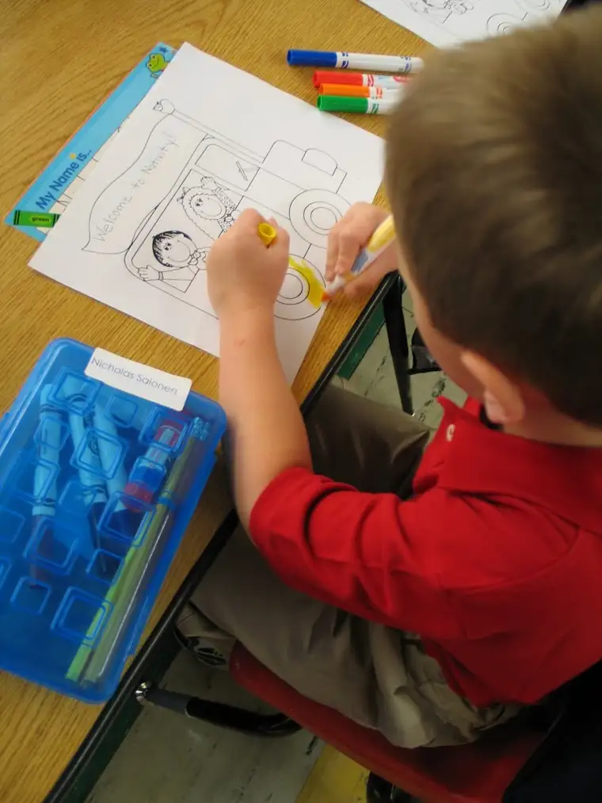

Dear God,
{kind=link}
This week, as you know, my baby started kindergarten. In moments, I have wondered, how is he doing? What is he doing? What is he thinking? Is he sad? Happy? Does he miss me, even think of me at all?
We have been so connected these past years, my little buddy and I. And now, just like that, he is off on his own in the world, without me.
“The toilet has blue water — I can’t go to the bathroom,” he said at orientation. “It’s okay,” I said. “That just means it’s really clean.”
What if I hadn’t been there that day? He might have been afraid for months to go to the bathroom at school, had I not assured him that the cleaning solution used in the toilet was nothing to be concerned about. Would he have mentioned it to the teacher eventually? Or another child? Or kept it inside and worried?
Even though this change is indeed good, how I’ve wished in moments that I could be a fly on the wall of his classroom, buzzing near in moments, sending off a vibe of love just in case he’s in need of one.
And yet you, God, are the Fly of All Flies, perpetually there on the wall, never far from him. You will be with him when he’s lonely, I know this, and you will whisper to me on those days when he’ll need me more after school. You’ll help me know what to say to make things better, as you always have.
I cannot be that fly on the wall, but You are, dear God. You are there for him, just as you have always been there for me, always.
And you are the link that keeps us connected, even when we are apart. You will always be that link.
Thank you, God, for drawing the line that leads from my heart, to his, and back to You again.
Love always,
Roxane